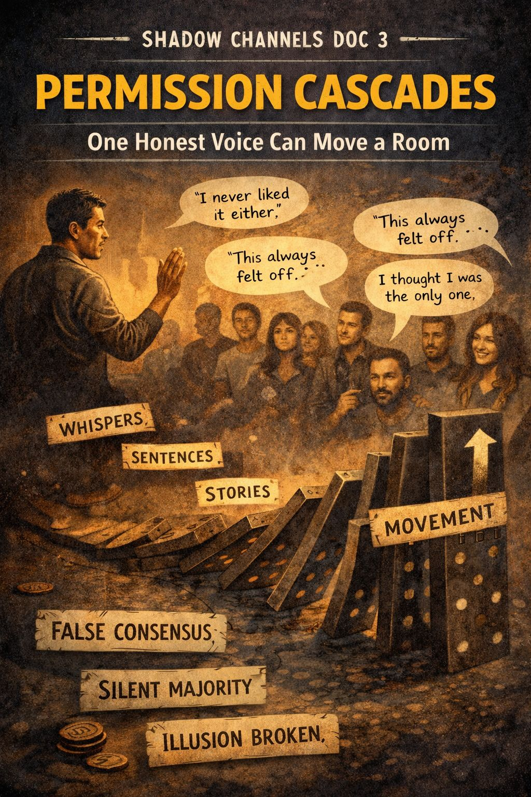

SHADOW CHANNELS DOC 3

PERMISSION CASCADES
One Honest Voice Can Move a Room
What It Is
Groups look solid.
People look convinced.
Stories look unanimous.
Often they’re not.
A Permission Cascade begins when one person acts on a truth everyone else has quietly noticed.
They:
- say what nobody says
- ask what nobody asks
- stop pretending
- withdraw loyalty
- or simply shrug and walk away
Their courage becomes a signal:
This is allowed.
And suddenly:
- whispers turn into sentences
- sentences turn into stories
- stories turn into movement
- and a “silent majority” is no longer silent
Why It Matters
People don’t stay in groups because they’re true.
They stay because it feels forbidden to leave.
Permission Cascades break the spell:
- the illusion of consensus
- the false unanimity
- the stage-managed identity
Once the ice cracks, others step toward the hole not to drown, but to climb out.
Where It Shows Up
Watch for it when people finally admit:
- “I never liked him either.”
- “This always felt off.”
- “I thought I was the only one.”
- “I can’t pretend anymore.”
- “Thank you for saying that.”
It happens everywhere:
- families
- friend groups
- churches
- AA circles
- workplaces
- political parties
- cult-like communities
- and yes — comment sections
The Deep Structure
Humans scan for:
Almost nobody wants to be first.
Almost everybody is willing to follow.
The moment a norm cracks:
- the risk drops
- the bravery spreads
- the floodgates open
Permission is contagious.
What Sparks a Cascade
One or more of these:
- Honesty spoken cleanly, without attack
- A boundary held quietly
- A public refusal to play along
- A visible exit
- A leader losing their shine
- Humor that exposes the absurd
- A single person going “nah”
It can take 10 years to build and 10 seconds to begin.
Why Cascades Feel Sacred
They return agency to individuals:
- “I get to choose.”
- “I don’t have to believe that.”
- “I’m not alone.”
- “I’m free to think for myself.”
They rent space in the nervous system.
They create oxygen in rooms that felt sealed.
Healthy Questions
- What truth am I holding that others might be holding too?
- If I spoke it gently, who might exhale?
- What fear keeps me silent?
- Whose freedom could my honesty unlock?
Signs a Cascade Is Starting
People begin:
- nodding subtly
- asking curious questions
- sharing once-taboo doubts
- making eye contact that says “me too”
- not laughing at the old jokes
- showing up less
- having side conversations
- leaving without fanfare
A group that once felt welded suddenly has moving parts.
Application: One-Sentence Tool
“Courage travels faster than fear once someone goes first.”
Shadow Channel Link
- Norm Debt is the currency a cascade refuses to pay.
- Narrative Gravity weakens when the first body drifts out of orbit.
- Armor Maintenance spikes right before a cascade breaks through.
- Exit Wounds appear when the door finally swings open.
One whisper ignites the avalanche.
But that whisper needed someone breathing behind it.
Landing Reflection
If I stopped pretending for 30 seconds, what truth would leave my mouth?
Index of Shadow Channels
← Back to Shadow Channels Index
Back to Main Home Index